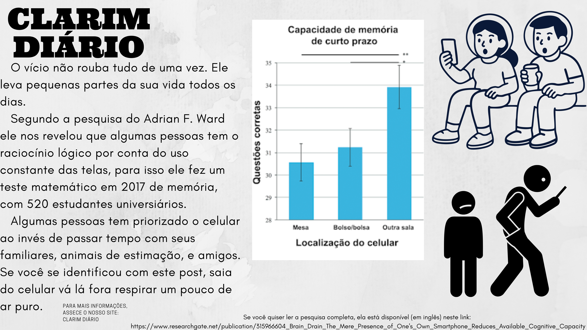

A melhor copa do mundo de todas
Por: Anonimo
Brasil finalmente se vinga do famoso 7x1 da Alemanha, e mete 10x2. No final da partida, Neymar comemora por conseguir finalmente ganhar a copa do mundo.
Aqui tem as melhores noticias do ano!!!
Por: Anonimo
Brasil finalmente se vinga do famoso 7x1 da Alemanha, e mete 10x2. No final da partida, Neymar comemora por conseguir finalmente ganhar a copa do mundo.
Por: Anonimo
Depois de anos da morte do famoso idolo do pop chamado Michael Jackson, ele é visto no cinema de Nova York assistindo o seu ploprio filme, junto com o seu macaco chamado Bubbles


Por: Jornalistas de NY
Apos um ataque de um cientista com 4 braços mecânicos, o justiceiro máscarado aparece, salvado pouco mais de 101 pessoas.Moradores de Ny começam a chama-lo de Homem aranha.
Melhores aspectos do avanço tecnológico
Piores partes do avanço tecnológico
